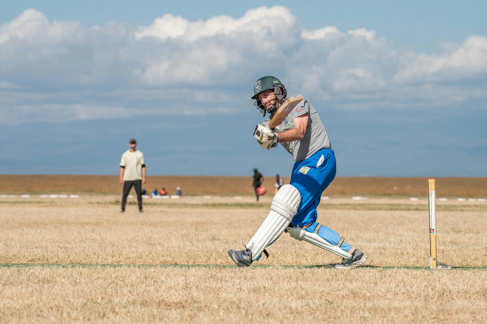

Tennis is a popular racquet sport played either individually (singles) or between two teams of two players (doubles). The game is played on a rectangular court divided by a net, with the objective of hitting the ball over the net into the opponent's court in a way that they cannot return it. Players use racquets to strike a felt-covered rubber ball, aiming to score points by making the ball bounce twice in the opponent's area or forcing errors. A tennis match is divided into sets, which are made up of games. A player wins a game by winning at least four points, with a margin of two points over the opponent. To win a set, a player generally needs to win six games, again by a two-game margin. The number of sets required to win a match varies, with most tournaments using the best of three or five sets. Tennis is played on various surfaces, including grass, clay, and hard courts, each requiring different playing styles. The sport is known for its major international tournaments, collectively known as the Grand Slam events: the Australian Open, French Open, Wimbledon, and the US Open. Tennis demands agility, stamina, and mental strength, making it one of the most skill-intensive sports globally.
.jpg)
Tennis
"The best motivation always comes from within."

Football
"True disputants are like true sportsmen: their whole delight is in the pursuit."

Cricket
“If you play good cricket, a lot of bad things get hidden.”